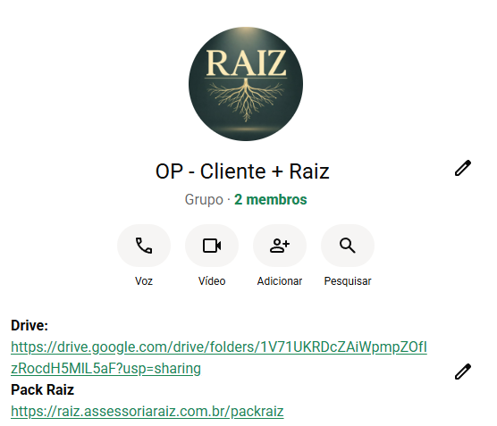
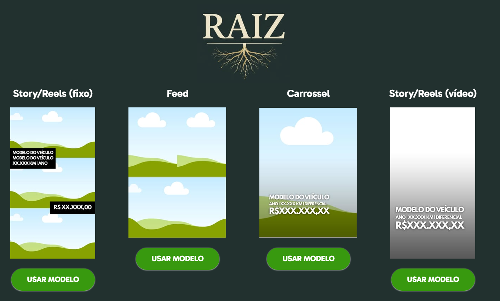
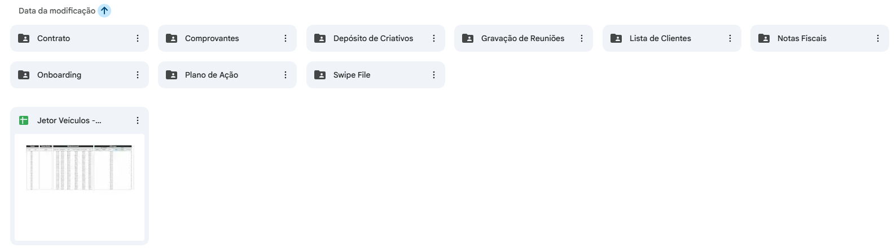

Onboarding · Jetor Veículos
Como funciona essa reunião
Dentro da parceria, e o que não faz parte.
Quando contrata marketing, pra gente não repetir isso.
Perguntas, próximos passos e prazos.
Como a gente se comunica
Você vai ter suporte direto pelo nosso grupo no WhatsApp. A gente organiza as respostas em janelas fixas pra te dar previsibilidade e não deixar nada passar.
Janela da manhã
Janela do meio-dia
Janela do fim do dia
Pode mandar mensagem a qualquer hora. Se cair fora dessas janelas, respondemos na próxima. Em caso de urgência real, é só ligar no grupo que a gente entra na hora.
Onde tudo mora


Onde tudo mora

Acompanhamento
Mais simples, pra você bater o olho e ver o rumo do projeto a qualquer momento.
Mais completo, com reunião: prestamos contas do investimento e do retorno, entendemos o que funcionou e decidimos juntos as prioridades do próximo mês.
Presença e posicionamento
Como se apresentar, o que reforçar, o que faz sentido postar pra aumentar confiança e conversão.
Importante: a gente não produz foto, vídeo ou arte. A gente direciona e usa o que você já tem, ou indica parceiro.
Erro 1
É como viajar sem GPS: você anda, gasta, mas não sabe se está indo pro lugar certo. Aqui a gente trabalha com um método em 3 fases, pensa como uma viagem:
Por isso tráfego não é apertar um botão.
Erro 2
Tráfego é combustível. Mas combustível não faz o carro andar se o motor estiver ruim. O resultado vem de 4 peças juntas:
o que você vende e por que vale
o que a pessoa vê
o que você responde e como conduz
o que leva a pessoa até você
Se uma dessas peças falha, o tráfego só deixa isso mais visível.
A métrica que ninguém te conta
50%
dos resultados de venda estão relacionados ao Criativo
Metade vem do criativo
É o ponto de contato direto com quem já te segue. Mostrar bastidor, rotina e o dia a dia do processo aproxima.
O algoritmo entende a relevância do seu perfil e te conecta a mais gente nova.
Você está a um anúncio de distância de realizar mais vendas. Anúncios novos possibilitam novos testes e conquistar mais resultados. Falta de anúncio diminui a performance.
A outra metade do resultado
Tráfego só leva a pessoa até a porta. O que acontece depois que ela bate na porta não é mais sobre o anúncio:
Benefício claro definido, solução de dor ou problema, diferencial do produto ou serviço, prova social, simplicidade e coerência.
Página, landing page ou site, WhatsApp, velocidade de resposta, qualidade do atendimento, equipe e processo de vendas.
Por isso a gente faz tantas perguntas antes de sair investindo, pra entender o seu negócio inteiro e montar a estratégia certa.
Erro 3
É como ensinar uma criança a andar: ela não levanta e sai correndo no primeiro dia. Primeiro tenta, cai, dá dois passos, e vai evoluindo.
No tráfego é parecido: no começo a gente precisa de um período pra entender o que funciona. Conforme aprende, melhora e acelera.
Preferimos prometer processo e melhoria contínua do que vender um foguete e frustrar.
Erro 4
Pensa num avião: o piloto faz a parte dele, mas precisa da torre e da pista. Aqui é igual, a gente cuida das campanhas e da estratégia, você cuida do que transforma oportunidade em venda. Pra isso funcionar bem, a gente precisa de 3 coisas suas:
investimento em dia e acessos liberados
foto, vídeo, informação
atendimento rápido e retorno sobre o que virou venda de verdade
Quando os dois lados fazem bem feito, o tráfego vira previsível.
Prazos
Pra você saber exatamente o que esperar quando precisar de algo:
Tudo a partir do momento em que a gente recebe o material completo. A gente pede esses prazos porque cuida de vários parceiros ao mesmo tempo, e isso é o que garante uma entrega boa pra todo mundo.
Próximos passos
Assinatura do contrato
Onboarding essa conversa de hoje
Acessos configuração liberada
Estratégia plano e aprovação
Decolagem campanhas no ar
Em até 3 dias úteis depois da reunião estratégica, as campanhas já estão no ar.
Algumas perguntas pra entender o teu negócio a fundo e montar a estratégia certa.